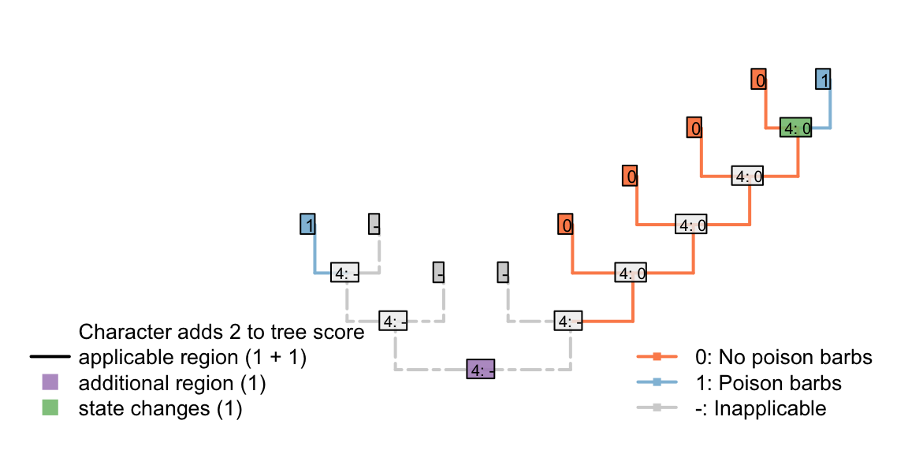
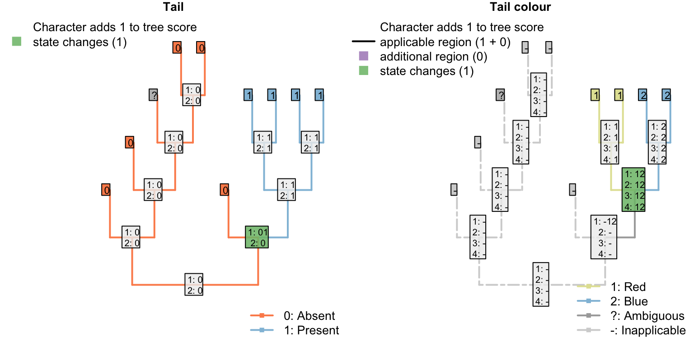

6 Inapplicable data in a parsimony setting
This is one of a series of vignettes that works through the inapplicable algorithm proposed by Brazeau et al. (2017).
We assume that you’ll already have read the description of our algorithm.
6.1 Multiple dependencies
It’s not a problem to have characters dependent on characters that are dependent on characters. Consider the following characters, whose descriptions are written in order to emphasize their heirarchical nature (following the recommendations of Sereno, 2007):
- Appendages: (0), absent; (1), present.
- Appendages, termination: (0), blunt; (1), sucker; (2), claw.
- Appendages, suckers, morphology: (0), round; (1), polygonal.
- Appendages, claws, morphology: (0), smooth; (1), serrated.
The included taxa may or may not bear appendages; if they do, then the appendages may end either with either claws or suckers, or neither (but not both). Claws come in two flavours, smooth and serrated; suckers come in two shapes, rounded and polygonal.
If character 1 (appendages) is absent, then characters 2–4 are inapplicable. Otherwise, charcter 2 (appendage termination) must take one of the three applicable values.
If character 2 (termination) has state 0 (blunt), then characters 3 and 4 (morphology of sucker / claw) are inapplicable.
If character 2 (termination) has state 1 (sucker), then character 3 (sucker morphology) is applicable and character 4 (claw morphology) is inapplicable.
If character 2 (termination) has state 2 (claw), then character 3 (sucker morphology) is inapplicable and character 4 (claw morphology) is applicable.
A sample character matrix might look like this:
| A | B | C | D | E | F | G | H | I | J | K | L | M | |
|---|---|---|---|---|---|---|---|---|---|---|---|---|---|
| Appendages: (0), absent; (1), present. | 0 | 0 | 0 | 1 | 1 | 1 | 1 | 1 | 1 | 1 | 1 | 1 | 1 |
| Appendage termination: (1), blunt; (2), sucker; (3), claw. | - | - | - | 1 | 1 | 2 | 2 | 2 | 2 | 3 | 3 | 3 | 3 |
| Sucker morphology: (1), smooth; (2), serrated. | - | - | - | - | - | 1 | 1 | 2 | 2 | - | - | - | - |
| Claw morphology: (1), round; (2), polygonal. | - | - | - | - | - | - | - | - | - | 1 | 1 | 2 | 2 |
Which would plot on a tree thus:

There’s no limit to the depth of recursion: one could add a further character
- Appendages, claws, serrations, spacing: (1), regular; (2), irregular.
that would be inapplicable in all taxa that lacked serrated claws.

To readers familiar with standard Fitch parsimony, it will be surprising to notice that the two trees receive a different score for this invariant character. When our algorithm is employed, invariant characters that contain inapplicable tokens can inform parsimony.
6.2 Invariant characters can inform parsimony
Consider a situation in which every tail in the observed taxa is blue – but the same complex molecular machinery is responsible for this blue colouration in every taxon.
If its underlying mechanism is considered biologically and evolutionarily meaningful, then a systematist might opt to include tail colour as an additional character, even though it is invariant in the taxa of interest. Reconstructions that attribute this common colouration to common ancestry will be more parsimonious than those that do not.
| A | B | C | D | E | F | G | H | |
|---|---|---|---|---|---|---|---|---|
| Tail: (0), absent; (1), present | 0 | 0 | 0 | 0 | 1 | 1 | 1 | 1 |
| Tail colour: (1), blue; (-), inapplicable | - | - | - | - | 1 | 1 | 1 | 1 |
| Body colour: (1), black; (2), white | 1 | 1 | 2 | 2 | 2 | 2 | 1 | 1 |
Let’s compare two trees. The first groups taxa based on the presence of tails; the other groups taxa based on body colour.


Where the tail has a single origin (one step), blue colouration also evolves once (zero steps), but body colour must change twice (two steps; total score = three). But where body colour changes only once (one step), the tail necessarily arises twice (two steps), meaning two independent origins of its distinctive blue colouration (one extra homoplasy; total score = four)
If the invariant tail colour character had not been included, both trees would have the same score, and there would be nothing to choose between them. As such, the inclusion or exclusion of invariant characters must be carefully evaluated: if there is a case that an invariant (ontologically dependent) character implies an exclusive common ancestry between those taxa that share it, then it should be included; if not, then it should be excluded.
6.3 Variable but ‘parsimony uninformative’ characters can inform parsimony
The same effect of course follows if a character has an additional state that is only observed in one taxon.
| A | B | C | D | E | F | G | H | I | |
|---|---|---|---|---|---|---|---|---|---|
| Tail: (0), absent; (1), present | 0 | 0 | 0 | 0 | 1 | 1 | 1 | 1 | 1 |
| Tail colour: (1), red; (2), blue; (-), inapplicable | - | - | - | - | 1 | 1 | 1 | 1 | 2 |
| Body colour: (1), black; (2), white | 1 | 1 | 2 | 2 | 2 | 2 | 1 | 1 | 1 |
Any tree that implies that blueness evolves multiple times will incur an additional penalty that would not have been encountered had the tail colour character been omitted.

6.4 This may not be desirable in neomorphic characters
The more general rule is that any tree that reconstructs the same state arising twice, independently, in an ontologically dependent character will incur a penalty relative to one that reconstructs that same state arising once.
With transformational characters, this is often a desideratum – as discussed above.
In particular neomorphic characters, however, it may not be desirable to penalise trees in which the absence of a character arises multiple times.
Let us imagine that there is a biological reason to believe that tails in a particular group lacked poisoned barbs when they first evolved: that is, poisoned barbs are an evolutionary innovation that can only be added to a tail once a tail is already present.
| A | B | C | D | E | F | G | H | I | |
|---|---|---|---|---|---|---|---|---|---|
| Tail: (0), absent; (1), present | 0 | 0 | 0 | 1 | 1 | 1 | 1 | 1 | 1 |
| Tail, poison barbs: (-), inapplicable; (0), absent; (1), present | - | - | - | 0 | 0 | 0 | 0 | 1 | 1 |
6.4.1 Three scenarios
The presence of poison barbs obviously contains grouping information – a reconstruction that attribute the presence of posion barbs to a single evolutionary gain in a common ancestor is parsimonious with respect to that character (even if it is less parsimonious with respect to another – e.g. the presence or absence of a tail).

Consider a reconstruction in which a tail evolved twice, and barbs evolved twice. Here, the duplicate origin of barbs (as well as the duplicate origin of the tail) makes this reconstruction less parsimonious.

But what about a situation in which a tail evolved twice, and lacked barbs each time it evolved? Coding this character as transformational penalises the duplicate origin of the state “no poison barbs”, making this reconstruction less parsimonious.
If we expect a tail, when it evolves, to lack barbs, then the second origin of “no barbs” does not represent a homoplasy: it’s not a feature that has evolved twice, but rather an observation that something has not evolved twice.
The absence of poison barbs in the two ancestral tail-bearers has been inherited from a common ancestor that did not itself bear tail barbs (by virtue, in this instance, of not bearing a tail). This second non-origination should not, therefore, be penalized in this situation.

This problem has arisen because the inapplicable token has been used in a character that is, in fact, applicable.
The statement “A tail is absent; the tail is red” is not logically consistent, which is why the inapplicable token is necessary. In contrast, the statement “A tail is absent; tail barbs are absent” is logically consistent, and the inapplicable token is not necessary. Instead, the ‘absence’ token should be employed instead of the inapplicable:

The point here is that the inapplicable token ought only to be used in tips where a character description literally does not apply. As an example, De Laet (De Laet, 2017) contends that the character “Tail: absent/present” is inapplicable in an angiosperm. We disagree. Angiosperms do not have tails. “Tail”" should be coded as absent in angiosperms.
One way to emphasize this distinction in character matrices is to reserve the 0 token to denote absence, and denoting states of transformational characters using the positive integers:
| A | B | C | D | E | F | G | H | I | |
|---|---|---|---|---|---|---|---|---|---|
| Tail: (0), absent; (1), present | 0 | 0 | 0 | 1 | 1 | 1 | 1 | 1 | 1 |
| Tail, poison barbs: (0), absent; (1), present | 0 | 0 | 0 | 0 | 0 | 0 | 0 | 1 | 1 |
| Tail, colour: (-), inapplicable; (1), red; (2), blue | - | - | - | 1 | 1 | 1 | 2 | 2 | 2 |
One implication of this coding strategy is that the loss of a tail (a single evolutionary event) causes the loss of all contintent characters – characters are not independent.

If a poisoned tail was present in a lineage, then lost, then re-gained, would one expect the re-gained tail to also re-gain its poisoned barbs? One could spend some time evaluating whether this behaviour has a biological underpinning, or whether it is desirable – is a reconstruction that invokes the loss of a complex tail more parsimonious than one that invokes the loss of a simple tail?
Indeed, it would be straightforwards to construct an algorithm that does not penalise losses where the loss corresponds to the inferred loss of a parent character.
The underlying issue, however, is that both parsimony and the Mk model assume character independence; it is perhaps more fruitful to focus effort on developing models of evolution that take proper account of character non-independence.
6.4.2 Does absence contain phylogenetic information?
In some cases, the absence of a feature (e.g. serrations) may represent a transformational character and should thus be coded as such. But this decision is an important one and merits careful thought. A researcher may or may not be justified in including properties of a tail that occur in only one, or even in none, of the taxa of interest, for if absence is informative for parsimony, then such characters will influence tree topology: parsimony uninformative characters inform parsimony.
| A | B | C | D | E | F | G | |
|---|---|---|---|---|---|---|---|
| Tail: (0), absent; (1), present | 0 | 0 | 0 | 1 | 1 | 1 | 1 |
| Tail, margin: (-), inapplicable; (1), smooth; (2), serrated | - | - | - | {12} | {12} | 1 | 1 |
| Tail, glow-in-the-dark pigment: (-), inapplicable; (1), absent; (2), present | - | - | - | {12} | {12} | 1 | 1 |
| Tail, ability to generate electricity: (-), inapplicable; (1), absent; (2), present | - | - | - | {12} | {12} | 1 | 1 |
Note that each of the unobserved characters provides evidence against independent origins of the tail, preferring instead independent losses:

Under the simple matrix presented above, the left-hand tree receives a score of five (two independent gains of the tail, plus the three ontologically dependent characters with an additional step each), whereas the right-hand tree scores but three (three independent losses of the tail; no steps in the ontologically dependent characters), making it more parsimonious.
If the three ontologically-dependent characters were coded as ‘absent’ (instead of inapplicable) when the tail was absent, then the left-hand tree would be preferred (with a score of 2 vs. 3).
The two trees are equally parsimonious (both scoring three) if tail margin is treated as a trasnformational character (inapplicable when tail absent) and the other characters are treated as neomorphic (absent when tail absent).
| A | B | C | D | E | F | G | |
|---|---|---|---|---|---|---|---|
| Tail: (0), absent; (1), present | 0 | 0 | 0 | 1 | 1 | 1 | 1 |
| Tail, margin: (1), smooth; (2), serrated | - | - | - | {12} | {12} | 1 | 1 |
| Tail, glow-in-the-dark pigment: (-), inapplicable; (0), absent; (1), present | 0 | 0 | 0 | {01} | {01} | 0 | 0 |
| Tail, ability to generate electricity: (-), inapplicable; (0), absent; (1), present | 0 | 0 | 0 | {01} | {01} | 0 | 0 |
6.5 Coding ontologically dependent neomorphic characters
6.5.1 Neomorphic and transformational characters
Researchers should be aware that our algorithm treats nemorphic characters as though they are transformational; that is, “absence” of a feature is seen as equally informative as “presence”.
In some cases, this may be desirable. One might argue that “Serrations on tail margin: (0), absent; (1), present” behaves as a transformational character, as a tail must have a margin of some sort, and “serratedness” is a property of the margin – perhaps there is no reason to assume that the tail was primitively simple, or that serrations necesssarily represent a secondary increase in complexity.
In other cases, this may not be desirable. As an example, consider a complex character, such as the eyespots on the tail of a peacock.
| A | B | C | D | E | F | G | H | I | |
|---|---|---|---|---|---|---|---|---|---|
| Tail: (0), absent; (1), present | 0 | 0 | 0 | 1 | 1 | 1 | 1 | 1 | 1 |
| Tail eyespots: (-), inapplicable; (0), absent; (1), present | - | - | - | 0 | 0 | 0 | 0 | 1 | 1 |
The presence of tail eyespots obviously contains grouping information – we should prefer reconstructions that attribute the presence of tail eyespots to common ancestry to those that imply independent gains of this complex characteristic.
It is less obvious whether the absence of such complex features should convey grouping information. This decision ought to be defended for individual characters by individual researchers, but researchers should be aware of the implications of their chosen coding strategy.
6.5.1.1 Three trees
Consider the following three scenarios:

Each of these trees implies two independent origins of the tail. Their score differs only with respect to the eyespots character.
6.5.1.1.1 One tail spotted, one not
The first tree has the minimum possible score for the eyespots character. (A score of one would also be obtained if the tail evolved once, and a single transformation occurred between 0 and 1 – but we are only considering trees where the tail evolved twice.)
6.5.1.1.2 Two spot appearances
The next tree has a score of two for the eyespots character, which is obviously correct: Eye spots, a complex character, have evolved twice independently, which is not as parsimonious.
6.5.1.1.3 Two non-spotted appearances
The final tree also has a score of two for the eyespots character: even though eyespots have only evolved once, just as in the first tree. The score of two occurs because the “absence of eyespots” has evolved twice.
6.5.1.1.4 Evaluation
It is possible that a researcher might feel uncomfortable grouping taxa on the basis of the non-occurrence of a complex feature that did not occur in their common ancestor. Putting this another way, it is not clear that the fact that a feature has not evolved in two instances represents a homoplasy. The absence of eyespots in a tail is not an evolutionary innovation – it is an inheritance from a common ancestor that did not have eyespots (and did not have a tail).
6.5.1.1.5 Implications
A researcher that argues that the absence of a feature contains phylogenetic information must surely include all properties of a tail that are only observed in a single taxon (because the absence of that feature in other taxa also contains grouping information). A researcher may also include all properties of a tail that do not occur in any of the taxa of interest, for these too will influence tree topology: parsimony uninformative characters inform parsimony.
| A | B | C | D | E | F | G | |
|---|---|---|---|---|---|---|---|
| Tail: (0), absent; (1), present | 0 | 0 | 0 | 1 | 1 | 1 | 1 |
| Tail with glow-in-the-dark pigment: (-), inapplicable; (0), absent; (1), present | - | - | - | {01} | {01} | 0 | 0 |
| Tail with ability to generate electricity: (-), inapplicable; (0), absent; (1), present | - | - | - | {01} | {01} | 0 | 0 |
Note that each of the unobserved characters provides evidence against independent origins of the tail, preferring instead independent losses:

Thus the simple matrix presented above sees both of these trees as equally parsimonious – three losses of a single-origin tail that lacks two unlikely attributes is considered as likely as one independent gain of a similar tail.
This behaviour is desired if the similarity between the tails requires an evoltuionary explanation. But the absence of these features does not seem any more difficult to explain if the tails do not have a common ancestor.
The solution here is to deploy a different character coding strategy, coding absences as absences. That way, absence CAN be inherited from a common ancestor, in which a complex-feature-of-the-tail (eyespots, glow-inthe-dark pigment) was absent (and the tail was absent too).
| A | B | C | D | E | F | G | |
|---|---|---|---|---|---|---|---|
| Tail: (0), absent; (1), present | 0 | 0 | 0 | 1 | 1 | 1 | 1 |
| Tail with glow-in-the-dark pigment: (-), inapplicable; (0), absent; (1), present | 0 | 0 | 0 | {01} | {01} | 0 | 0 |
| Tail with ability to generate electricity: (-), inapplicable; (0), absent; (1), present | 0 | 0 | 0 | {01} | {01} | 0 | 0 |
This can be handled by the Fitch algorithm, and works well in simple cases:

The behaviour only becomes questionable when a tail is secondarily lost, then re-gained, as the loss of a tail seems like it should be a single evolutionary step, but also causes the loss of all contingent characters, which must then “reevolve” as though they had never existed:

Perhaps there are cases – as might be seen in phenotypic plasticity – where a tail might be lost, and then re-activate preexisting genes when it evolves again? This starts to require an explicit model of evolution, however, which is somewhat beyond the remit of parsimony.
6.5.1.2 Recommendation
- Neomorphic characters should probably be coded as absent everywhere they are absent, whether this is because there’s no tail or because there’s a tail without the complex feature.
If you’re coding a neomorphic character as transformational, then you encounter problems.

References
Brazeau, M. D., Guillerme, T., & Smith, M. R. (2017). Morphological phylogenetic analysis with inapplicable data. bioR\(\chi\)iv. doi:10.1101/209775
Sereno, P. C. (2007). Logical basis for morphological characters in phylogenetics. Cladistics, 23(6), 565–587. doi:10.1111/j.1096-0031.2007.00161.x
De Laet, J. (2017). A note on brazeau et al.’s (2017) algorithm for characters with inapplicable data, illustrated with an analysis of their fig. 3d using anagallis, a program for parsimony analysis of character hierarchies. doi:10.13140/RG.2.2.31309.54245